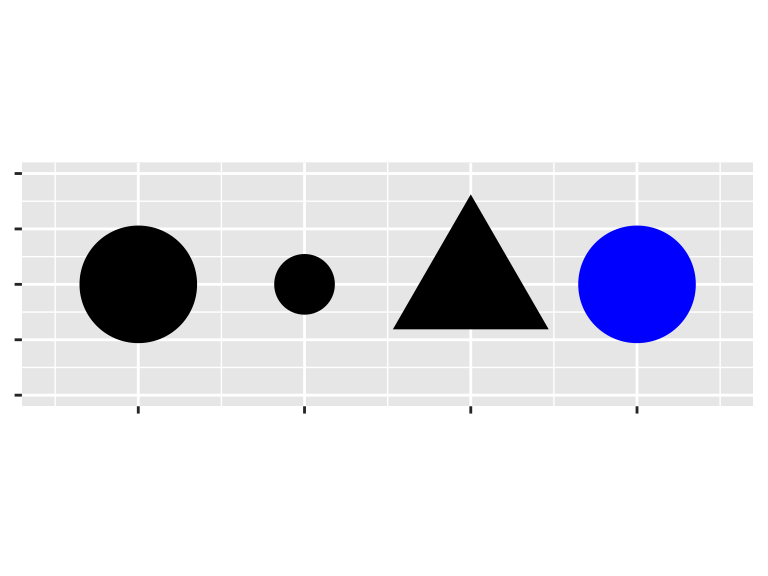

Introduction to the tidyverse: A very brief introduction to ggplot2()
Christopher Skovron
Northwestern University
July 17, 2018
Prerequisites
library(tidyverse)## ── Attaching packages ───────────────────────────── tidyverse 1.2.1 ──## ✔ ggplot2 2.2.1 ✔ purrr 0.2.5
## ✔ tibble 1.4.2 ✔ dplyr 0.7.5
## ✔ tidyr 0.8.1 ✔ stringr 1.3.1
## ✔ readr 1.1.1 ✔ forcats 0.3.0## ── Conflicts ──────────────────────────────── tidyverse_conflicts() ──
## ✖ dplyr::filter() masks stats::filter()
## ✖ dplyr::lag() masks stats::lag()Example data: the mpg data frame
mpg## # A tibble: 234 x 11
## manufacturer model displ year cyl trans drv cty hwy fl
## <chr> <chr> <dbl> <int> <int> <chr> <chr> <int> <int> <chr>
## 1 audi a4 1.8 1999 4 auto(l… f 18 29 p
## 2 audi a4 1.8 1999 4 manual… f 21 29 p
## 3 audi a4 2 2008 4 manual… f 20 31 p
## 4 audi a4 2 2008 4 auto(a… f 21 30 p
## 5 audi a4 2.8 1999 6 auto(l… f 16 26 p
## 6 audi a4 2.8 1999 6 manual… f 18 26 p
## 7 audi a4 3.1 2008 6 auto(a… f 18 27 p
## 8 audi a4 quat… 1.8 1999 4 manual… 4 18 26 p
## 9 audi a4 quat… 1.8 1999 4 auto(l… 4 16 25 p
## 10 audi a4 quat… 2 2008 4 manual… 4 20 28 p
## # ... with 224 more rows, and 1 more variable: class <chr>Example data: the mpg data frame
Among the variables in mpg are:
displ, a car’s engine size, in litres.hwy, a car’s fuel efficiency on the highway, in miles per gallon (mpg). A car with a low fuel efficiency consumes more fuel than a car with a high fuel efficiency when they travel the same distance.
Creating a ggplot
To plot mpg, run this code to put displ on the x-axis and hwy on the y-axis: ## Creating a ggplot
ggplot(data = mpg) +
geom_point(mapping = aes(x = displ, y = hwy))
Arguments
ggplot() creates a coordinate system that you can add layers to. The first argument of ggplot() is the dataset to use in the graph. So ggplot(data = mpg) creates an empty graph, but it’s not very interesting so I’m not going to show it here.
Arguments
You complete your graph by adding one or more layers to ggplot(). The function geom_point() adds a layer of points to your plot, which creates a scatterplot. ggplot2 comes with many geom functions that each add a different type of layer to a plot.
Arguments
Each geom function in ggplot2 takes a mapping argument. This defines how variables in your dataset are mapped to visual properties. The mapping argument is always paired with aes(), and the x and y arguments of aes() specify which variables to map to the x and y axes. ggplot2 looks for the mapped variable in the data argument, in this case, mpg.
A graphing template
ggplot(data = <DATA>) +
<GEOM_FUNCTION>(mapping = aes(<MAPPINGS>))Aesthetic mappings
In the plot below, one group of points (highlighted in red) seems to fall outside of the linear trend. These cars have a higher mileage than you might expect. How can you explain these cars?
Aesthetic mappings
Arguments
You can add a third variable, like class, to a two dimensional scatterplot by mapping it to an aesthetic. An aesthetic is a visual property of the objects in your plot. Aesthetics include things like the size, the shape, or the color of your points. ## Arguments
 ## Arguments
You can convey information about your data by mapping the aesthetics in your plot to the variables in your dataset. For example, you can map the colors of your points to the class variable to reveal the class of each car. ## Arguments
ggplot(data = mpg) +
geom_point(mapping = aes(x = displ, y = hwy, color = class))Arguments
In the above example, we mapped class to the color aesthetic, but we could have mapped class to the size aesthetic in the same way. In this case, the exact size of each point would reveal its class affiliation. We get a warning here, because mapping an unordered variable (class) to an ordered aesthetic (size) is not a good idea. ## Arguments
ggplot(data = mpg) +
geom_point(mapping = aes(x = displ, y = hwy, size = class))## Warning: Using size for a discrete variable is not advised.## Arguments
Or we could have mapped class to the alpha aesthetic, which controls the transparency of the points, or the shape of the points. ## Arguments
# Left
ggplot(data = mpg) +
geom_point(mapping = aes(x = displ, y = hwy, alpha = class))# Right
ggplot(data = mpg) +
geom_point(mapping = aes(x = displ, y = hwy, shape = class))Arguments
You can also set the aesthetic properties of your geom manually. For example, we can make all of the points in our plot blue: ## Arguments
ggplot(data = mpg) +
geom_point(mapping = aes(x = displ, y = hwy), color = "blue")## Arguments
Here, the color doesn’t convey information about a variable, but only changes the appearance of the plot. To set an aesthetic manually, set the aesthetic by name as an argument of your geom function; i.e. it goes outside of aes(). You’ll need to pick a value that makes sense for that aesthetic:
Exercises
What’s gone wrong with this code? Why are the points not blue?
ggplot(data = mpg) + geom_point(mapping = aes(x = displ, y = hwy, color = "blue"))What does the
strokeaesthetic do? What shapes does it work with? (Hint: use?geom_point)
Facets
One way to add additional variables is with aesthetics. Another way, particularly useful for categorical variables, is to split your plot into facets, subplots that each display one subset of the data. ## Facets
To facet your plot by a single variable, use facet_wrap(). The first argument of facet_wrap() should be a formula, which you create with ~ followed by a variable name (here “formula” is the name of a data structure in R, not a synonym for “equation”). The variable that you pass to facet_wrap() should be discrete. ## Facets
ggplot(data = mpg) +
geom_point(mapping = aes(x = displ, y = hwy)) +
facet_wrap(~ class, nrow = 2)## Facets
To facet your plot on the combination of two variables, add facet_grid() to your plot call. The first argument of facet_grid() is also a formula. This time the formula should contain two variable names separated by a ~. ## Facets
ggplot(data = mpg) +
geom_point(mapping = aes(x = displ, y = hwy)) +
facet_grid(drv ~ cyl)## Facets
If you prefer to not facet in the rows or columns dimension, use a . instead of a variable name, e.g. + facet_grid(. ~ cyl). is section:
```r
ggplot(data = mpg) +
geom_point(mapping = aes(x = displ, y = hwy)) +
facet_wrap(~ class, nrow = 2)
```Geometric objects
How are these two plots similar?
 ## Geometric objects
## Geometric objects
Both plots contain the same x variable, the same y variable, and both describe the same data. But the plots are not identical. Each plot uses a different visual object to represent the data. In ggplot2 syntax, we say that they use different geoms. ## Geometric objects
A geom is the geometrical object that a plot uses to represent data. People often describe plots by the type of geom that the plot uses. For example, bar charts use bar geoms, line charts use line geoms, boxplots use boxplot geoms, and so on. Scatterplots break the trend; they use the point geom. As we see above, you can use different geoms to plot the same data. The plot on the left uses the point geom, and the plot on the right uses the smooth geom, a smooth line fitted to the data. ## Geometric objects
To change the geom in your plot, change the geom function that you add to ggplot(). For instance, to make the plots above, you can use this code:
# left
ggplot(data = mpg) +
geom_point(mapping = aes(x = displ, y = hwy))
# right
ggplot(data = mpg) +
geom_smooth(mapping = aes(x = displ, y = hwy))Geometric objects
Every geom function in ggplot2 takes a mapping argument. However, not every aesthetic works with every geom. You could set the shape of a point, but you couldn’t set the “shape” of a line. On the other hand, you could set the linetype of a line. geom_smooth() will draw a different line, with a different linetype, for each unique value of the variable that you map to linetype.
Geometric objects
ggplot(data = mpg) +
geom_smooth(mapping = aes(x = displ, y = hwy, linetype = drv))Geometric objects
Here geom_smooth() separates the cars into three lines based on their drv value, which describes a car’s drivetrain. One line describes all of the points with a 4 value, one line describes all of the points with an f value, and one line describes all of the points with an r value. Here, 4 stands for four-wheel drive, f for front-wheel drive, and r for rear-wheel drive.
Geometric objects
ggplot(data = mpg) +
geom_smooth(mapping = aes(x = displ, y = hwy))ggplot(data = mpg) +
geom_smooth(mapping = aes(x = displ, y = hwy, group = drv))ggplot(data = mpg) +
geom_smooth(
mapping = aes(x = displ, y = hwy, color = drv),
show.legend = FALSE
)Geometric objects
To display multiple geoms in the same plot, add multiple geom functions to ggplot():
ggplot(data = mpg) +
geom_point(mapping = aes(x = displ, y = hwy)) +
geom_smooth(mapping = aes(x = displ, y = hwy))Geometric objects
This, however, introduces some duplication in our code. Imagine if you wanted to change the y-axis to display cty instead of hwy. You’d need to change the variable in two places, and you might forget to update one. You can avoid this type of repetition by passing a set of mappings to ggplot(). ggplot2 will treat these mappings as global mappings that apply to each geom in the graph. In other words, this code will produce the same plot as the previous code:
Geometric objects
ggplot(data = mpg, mapping = aes(x = displ, y = hwy)) +
geom_point() +
geom_smooth()Geometric objects
If you place mappings in a geom function, ggplot2 will treat them as local mappings for the layer. It will use these mappings to extend or overwrite the global mappings for that layer only. This makes it possible to display different aesthetics in different layers.
Geometric objects
ggplot(data = mpg, mapping = aes(x = displ, y = hwy)) +
geom_point(mapping = aes(color = class)) +
geom_smooth()Geometric objects
You can use the same idea to specify different data for each layer. Here, our smooth line displays just a subset of the mpg dataset, the subcompact cars. The local data argument in geom_smooth() overrides the global data argument in ggplot() for that layer only.
Geometric objects
ggplot(data = mpg, mapping = aes(x = displ, y = hwy)) +
geom_point(mapping = aes(color = class)) +
geom_smooth(data = filter(mpg, class == "subcompact"), se = FALSE)Exercises
Will these two graphs look different? Why/why not?
ggplot(data = mpg, mapping = aes(x = displ, y = hwy)) + geom_point() + geom_smooth() ggplot() + geom_point(data = mpg, mapping = aes(x = displ, y = hwy)) + geom_smooth(data = mpg, mapping = aes(x = displ, y = hwy))
Statistical transformations
ggplot(data = diamonds) +
geom_bar(mapping = aes(x = cut))
Statistical transformations
On the x-axis, the chart displays cut, a variable from diamonds. On the y-axis, it displays count, but count is not a variable in diamonds! Where does count come from? Many graphs, like scatterplots, plot the raw values of your dataset. Other graphs, like bar charts, calculate new values to plot: ## Statistical transformations
bar charts, histograms, and frequency polygons bin your data and then plot bin counts, the number of points that fall in each bin.
smoothers fit a model to your data and then plot predictions from the model.
boxplots compute a robust summary of the distribution and then display a specially formatted box.
Statistical transformations
You can generally use geoms and stats interchangeably. For example, you can recreate the previous plot using stat_count() instead of geom_bar():
Statistical transformations
ggplot(data = diamonds) +
stat_count(mapping = aes(x = cut)) ## Statistical transformations
## Statistical transformations
This works because every geom has a default stat; and every stat has a default geom. This means that you can typically use geoms without worrying about the underlying statistical transformation. There are three reasons you might need to use a stat explicitly:
Statistical transformations
- You might want to override the default stat. In the code below, I change the stat of
geom_bar()from count (the default) to identity. This lets me map the height of the bars to the raw values of a \(y\) variable. Unfortunately when people talk about bar charts casually, they might be referring to this type of bar chart, where the height of the bar is already present in the data, or the previous bar chart where the height of the bar is generated by counting rows.
Statistical transformations
```r
demo <- tribble(
~cut, ~freq,
"Fair", 1610,
"Good", 4906,
"Very Good", 12082,
"Premium", 13791,
"Ideal", 21551
)
ggplot(data = demo) +
geom_bar(mapping = aes(x = cut, y = freq), stat = "identity")
```
<img src="part6_ggplot_intro_files/figure-revealjs/unnamed-chunk-25-1.png" width="384" />Statistical transformations
- You might want to override the default mapping from transformed variables to aesthetics. For example, you might want to display a bar chart of proportion, rather than count:
Statistical transformations
```r
ggplot(data = diamonds) +
geom_bar(mapping = aes(x = cut, y = ..prop.., group = 1))
```
<img src="part6_ggplot_intro_files/figure-revealjs/unnamed-chunk-26-1.png" width="384" />Statistical transformations
- You might want to draw greater attention to the statistical transformation in your code. For example, you might use
stat_summary(), which summarises the y values for each unique x value, to draw attention to the summary that you’re computing:
Statistical transformations
```r
ggplot(data = diamonds) +
stat_summary(
mapping = aes(x = cut, y = depth),
fun.ymin = min,
fun.ymax = max,
fun.y = median
)
```
<img src="part6_ggplot_intro_files/figure-revealjs/unnamed-chunk-27-1.png" width="384" />Position adjustments
There’s one more piece of magic associated with bar charts. You can colour a bar chart using either the colour aesthetic, or, more usefully, fill:
Position adjustments
ggplot(data = diamonds) +
geom_bar(mapping = aes(x = cut, colour = cut))ggplot(data = diamonds) +
geom_bar(mapping = aes(x = cut, fill = cut))Position adjustments
Note what happens if you map the fill aesthetic to another variable, like clarity: the bars are automatically stacked. Each colored rectangle represents a combination of cut and clarity.
Position adjustments
ggplot(data = diamonds) +
geom_bar(mapping = aes(x = cut, fill = clarity))Position adjustments
The stacking is performed automatically by the position adjustment specified by the position argument. If you don’t want a stacked bar chart, you can use one of three other options: "identity", "dodge" or "fill". ## Position adjustments
position = "identity"will place each object exactly where it falls in the context of the graph. This is not very useful for bars, because it overlaps them. To see that overlapping we either need to make the bars slightly transparent by settingalphato a small value, or completely transparent by settingfill = NA.
Position adjustments
```r
ggplot(data = diamonds, mapping = aes(x = cut, fill = clarity)) +
geom_bar(alpha = 1/5, position = "identity")
```
<img src="part6_ggplot_intro_files/figure-revealjs/unnamed-chunk-30-1.png" width="50%" />
```r
ggplot(data = diamonds, mapping = aes(x = cut, colour = clarity)) +
geom_bar(fill = NA, position = "identity")
```
<img src="part6_ggplot_intro_files/figure-revealjs/unnamed-chunk-30-2.png" width="50%" />Position adjustments
position = "fill"works like stacking, but makes each set of stacked bars the same height. This makes it easier to compare proportions across groups.
Position adjustments
```r
ggplot(data = diamonds) +
geom_bar(mapping = aes(x = cut, fill = clarity), position = "fill")
```
<img src="part6_ggplot_intro_files/figure-revealjs/unnamed-chunk-31-1.png" width="384" />Position adjustments
position = "dodge"places overlapping objects directly beside one another. This makes it easier to compare individual values.
Position adjustments
```r
ggplot(data = diamonds) +
geom_bar(mapping = aes(x = cut, fill = clarity), position = "dodge")
```
<img src="part6_ggplot_intro_files/figure-revealjs/unnamed-chunk-32-1.png" width="384" />Position adjustments
There’s one other type of adjustment that’s not useful for bar charts, but it can be very useful for scatterplots. Recall our first scatterplot. Did you notice that the plot displays only 126 points, even though there are 234 observations in the dataset?
Position adjustments

Position adjustments
You can avoid this gridding by setting the position adjustment to “jitter”. position = "jitter" adds a small amount of random noise to each point. This spreads the points out because no two points are likely to receive the same amount of random noise.
Position adjustments
ggplot(data = mpg) +
geom_point(mapping = aes(x = displ, y = hwy), position = "jitter")Add
Exercises
What is the problem with this plot? How could you improve it?
ggplot(data = mpg, mapping = aes(x = cty, y = hwy)) + geom_point()What does the plot below tell you about the relationship between city and highway mpg? Why is
coord_fixed()important? What doesgeom_abline()do?ggplot(data = mpg, mapping = aes(x = cty, y = hwy)) + geom_point() + geom_abline() + coord_fixed()
The layered grammar of graphics
In the previous sections, you learned much more than how to make scatterplots, bar charts, and boxplots. You learned a foundation that you can use to make any type of plot with ggplot2. To see this, let’s add position adjustments, stats, coordinate systems, and faceting to our code template:
ggplot(data = <DATA>) +
<GEOM_FUNCTION>(
mapping = aes(<MAPPINGS>),
stat = <STAT>,
position = <POSITION>
) +
<COORDINATE_FUNCTION> +
<FACET_FUNCTION>